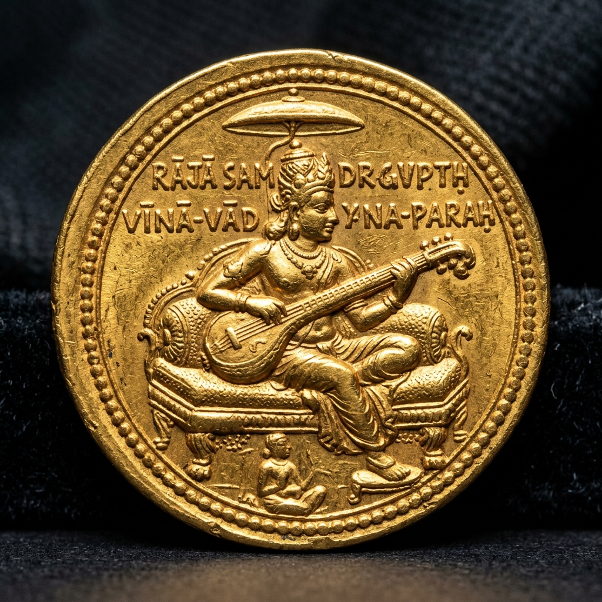
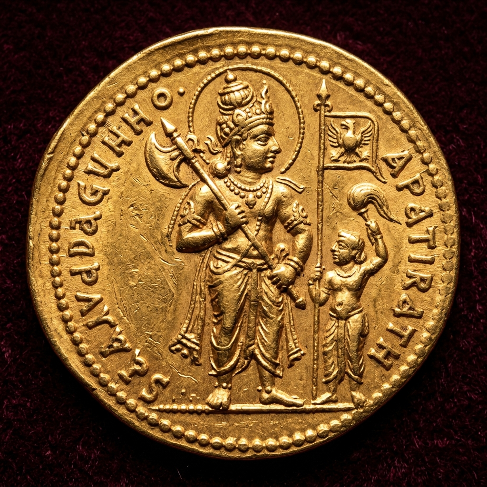
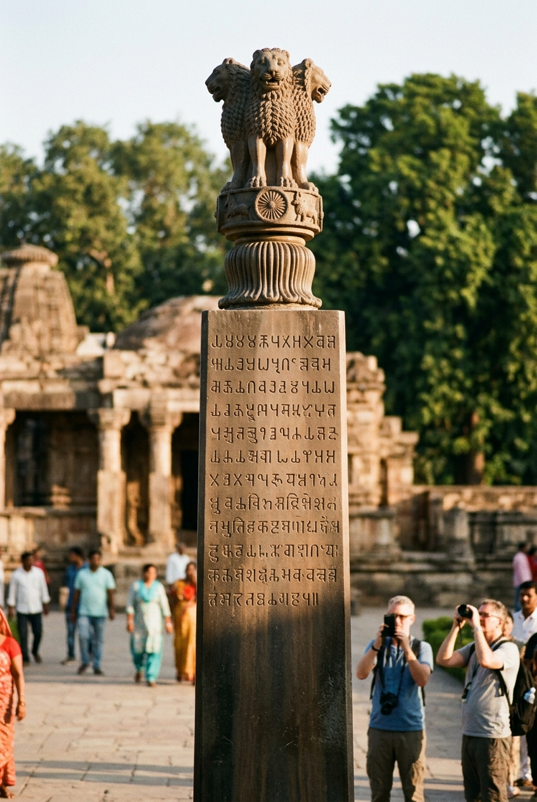
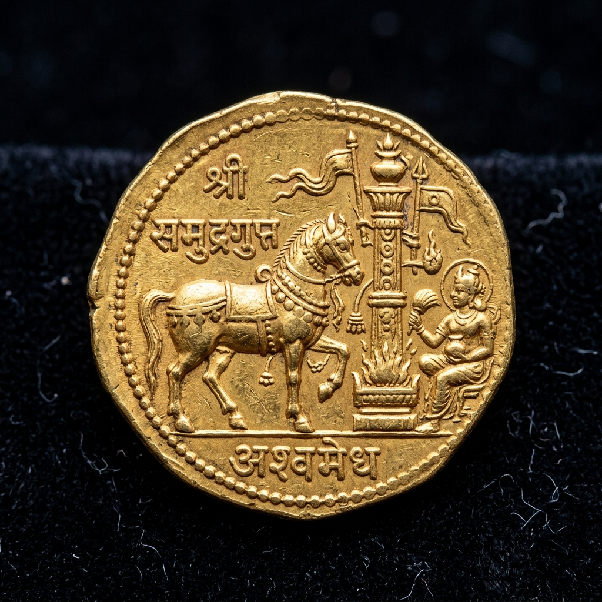

Samudragupta
The visionary warrior-king, accomplished musician, and poet who unified North India, launched the Southern Dakshinapatha expedition, and laid the foundations of India's Golden Age (c. 335 – 375 CE).

At a Glance: Key Historical Metadata
Accession & Consolidation of Aryavarta
Chandragupta I chose Samudragupta over other princes as his successor in open court. Upon ascending the throne at Pataliputra, Samudragupta consolidated power across Northern India (Aryavarta):
- Northern Campaigns (Aryavarta): Defeated and directly annexed 9 northern kings including Rudradeva, Matila, Nagadatta, and Ganapatinaga, creating a unified imperial core in the Gangetic plains.
- Subjugation of Atavika Kings: Reduced the forest kingdoms of Central India to vassalage, securing overland military supply corridors.

⚔️ Gold Battle-Axe (Parashu) coin symbolizing Samudragupta's martial prowess and northern conquests.
The Allahabad Pillar Inscription (Prayaga Prashasti)
Engraved on an Ashokan polished sandstone column at Allahabad (Prayagraj), the Prayaga Prashasti was composed by court poet and minister Harishena in ornate Sanskrit kavya style.
The inscription provides an exhaustive account of Samudragupta's genealogy, victories across 5 geopolitical zones, musical talents, and diplomatic alliances across Sri Lanka and Southeast Asia.

🏛️ The Allahabad Pillar (Prayaga Prashasti), primary epigraphic record of the early Gupta Empire.
The Dakshinapatha Expedition & Ashvamedha Revival
In his famous Dakshinapatha Expedition, Samudragupta marched over 3,000 kilometers down the eastern coast of India, defeating 12 southern kings (including Vishnugopa of Kanchi).
Rather than annexing these distant lands, he adopted the enlightened policy of Grahana-Mokshanugraha (capture, release, and re-instatement), returning their kingdoms in exchange for tribute and allegiance.
To celebrate his paramount sovereignty, Samudragupta revived the ancient Ashvamedha (horse sacrifice) ritual, issuing magnificent commemorative gold dinars.

🐎 Gold Ashvamedha coin depicting the ritual horse standing before a sacrificial Yupa post.
Test Your Knowledge on Samudragupta 🎯
Which ancient musical instrument is Emperor Samudragupta depicted playing on his famous gold dinars?